Lightweight structures, mechanics and experimental validation
This Mechanics of Materials project investigated the design, fabrication and load-bearing behavior of a lightweight Howe truss bridge built from wooden tongue depressors. The team developed a member-force model, tested the sticks in tension and buckling, constructed a 3D bridge prototype and measured its maximum supported load. The portfolio documents the original analysis and experimental evidence, including the limitations identified by the team.
The report identifies the bridge as a Howe truss and describes a design made from 96 sticks. Each modeled member was intended to use two glued sticks, with two side trusses joined into a three-dimensional assembly. The work illustrates how tension, compression, buckling and connection quality affect the strength of a low-mass structure.
All highlighted values are taken from the original report. A bridge-load-to-self-mass ratio of 135.2 follows arithmetically from the two reported masses and is not a measured safety factor.
Force distribution and truss design
The structural model uses nodes and connected members to represent a Howe-style truss under vertical loading. The source includes a structural-force diagram as well as tables of node locations, member lengths/forces and external reactions. The report states 96 sticks and claims a maximum member force of 323 N, but the original diagram includes entries with much greater magnitude, so the load-case consistency must be verified.
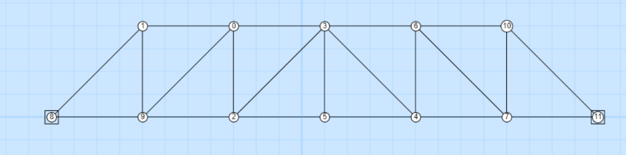
Reference bridge concept
Reference bridge photograph used to introduce truss construction. This is a contextual illustration, not the tested bridge.
Open original image ↗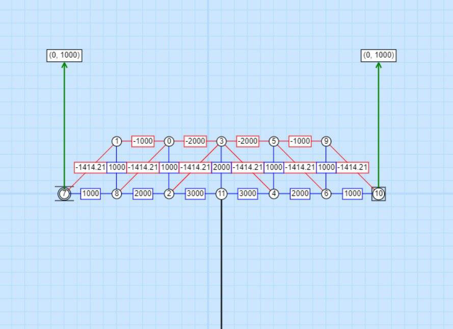
Structural analysis and member forces
The truss diagram shows external reactions and signed internal forces. Some displayed entries are on the order of 1,000–3,000 N; they do not agree with the separate written statement that the highest member force is 323 N. Confirm the diagram’s loading scale before using these values for design verification.
Open original image ↗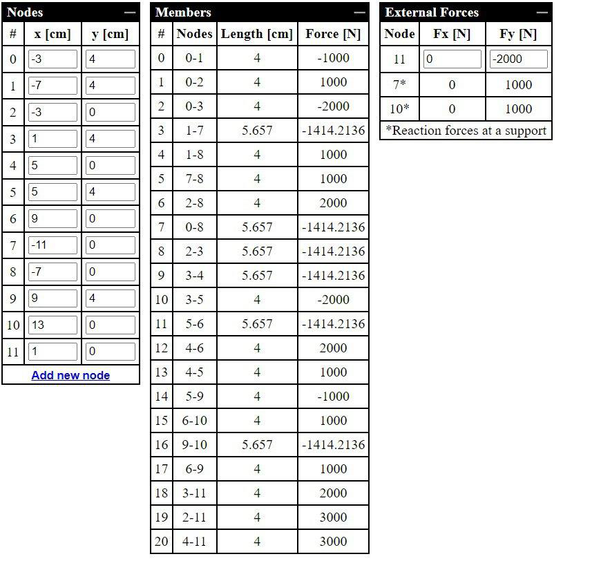
Node, member, and reaction tables
Original model tables list node coordinates, member connectivity, lengths, axial forces and applied reactions. Values and signs are retained as originally reported. The data should be checked against the actual bridge dimensions and load application.
Open original image ↗| Design / analysis quantity | Reported value | Interpretation |
|---|---|---|
| Truss configuration | Howe truss | Triangulated load path; joint integrity is important |
| Planned material | 96 wooden sticks | Reported construction quantity, not a verified as-built count |
| Member construction | Two sticks glued together | Described fabrication method |
| Maximum member load (narrative) | 323 N | Conflicts with larger values in the force-analysis diagram |
| Analysis tables | Node positions, member connectivity and forces, support reactions | Original complete tables reproduced as an enlarged image above |
Wooden-stick tensile behavior and buckling
The original report describes a tensile failure test, discusses why a dedicated compression test was not performed, and gives a separate buckling test result. The tensile strength reported is 23.66 MPa, with failure at 41 kg equivalent load (402.21 N). The measured buckling-test load is reported as 17.6 N.
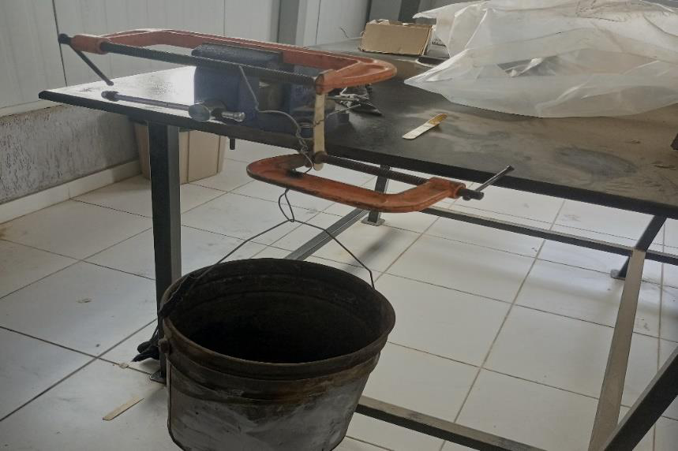
Tension test — experimental setup
The first photograph documents the improvised loading arrangement used to test a wooden stick in tension. Reported specimen failure occurs at 41 kg equivalent load (402.21 N); this is a material/specimen result, not the full bridge capacity.
Open original image ↗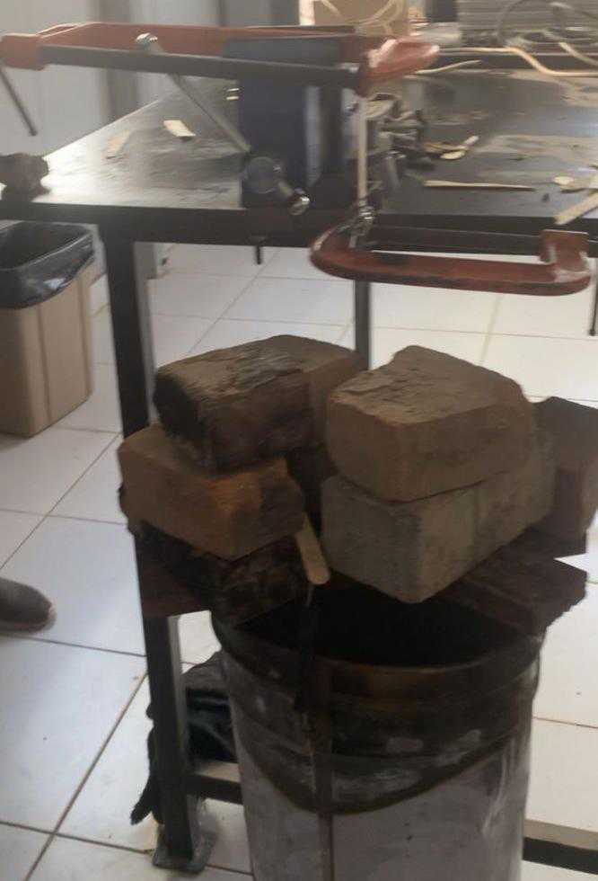
Tension test — applied weights
The second photograph shows the applied loading during the tensile-strength experiment. The report gives 23.66 MPa tensile strength, but does not provide a separate measurement-uncertainty estimate.
Open original image ↗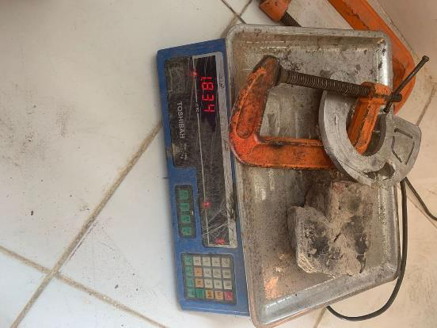
Buckling test apparatus
The report records a measured buckling load of 17.6 N for the stick test. Boundary conditions and specimen length affect buckling, so the result cannot be directly scaled to every truss member.
Open original image ↗| Test | Reported outcome | Technical comment |
|---|---|---|
| Tensile failure | 41 kg equivalent load = 402.21 N | Failure load of a test specimen; not full bridge capacity |
| Tensile strength | 23.66 MPa | Depends on tested cross-sectional area and load direction |
| Compression | Not conducted | The report explicitly says equipment constraints prevented this test; no experimental compressive strength is available |
| Buckling | 17.6 N | Observed in the described specimen/boundary condition; not an automatically valid limit for all members |
Constructed bridge and proof-load test
The team assembled a bridge with wooden sticks and glue, using doubled members and cross-connections between side frames. Photographs show the finished structure and the load test setup. The report records a maximum carried mass of 32.446 kg against a bridge mass of 240 g, while acknowledging the target was not met.
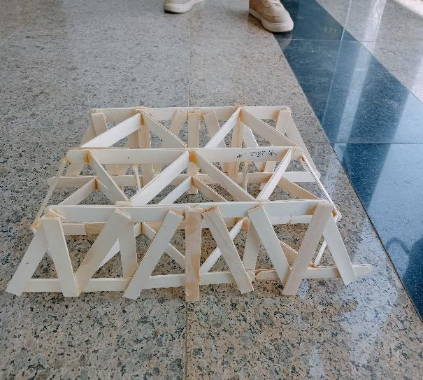
Constructed bridge — perspective view
An original photo shows the completed timber-stick Howe-style truss framework and cross-bracing. The team used multiple sticks for members to increase stiffness and load capacity.
Open original image ↗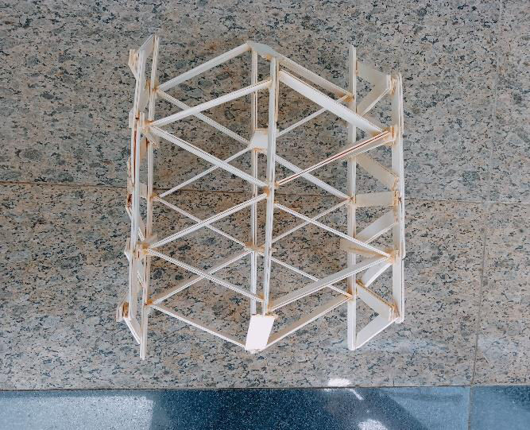
Constructed bridge — top view
The overhead view shows the three-dimensional structure and transverse members that connect the two side trusses.
Open original image ↗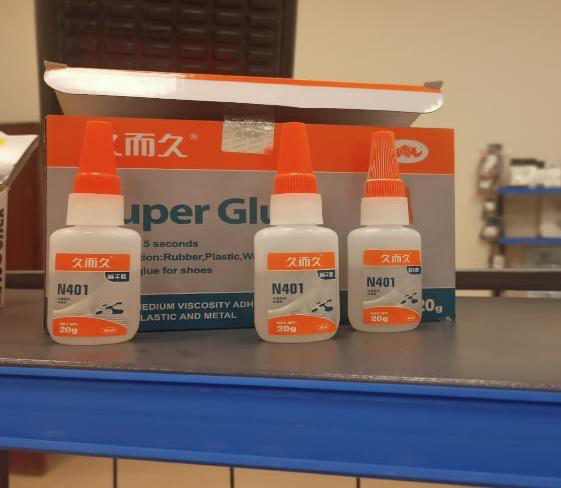
Fabrication materials — adhesive
Photograph of the glue used during prototype assembly. The report later identifies the joint/adhesive method as a contributing weakness of the tested structure.
Open original image ↗Fabrication materials — wooden sticks
Original packaging photo for the tongue depressors used as structural members. Their orthotropic behavior and connection quality matter to the design.
Open original image ↗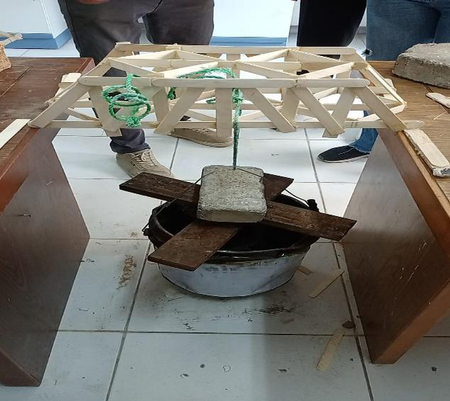
Bridge under load
Full-scale proof-loading photograph from the report. The measured maximum supported mass is stated as 32.446 kg; the photograph alone does not establish a formal safety factor.
Open original image ↗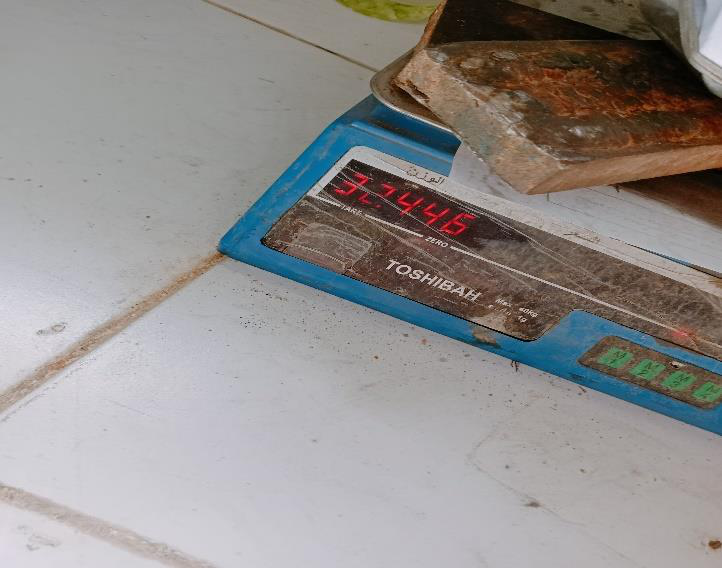
Recorded load measurement
Image of the scale at the load test. The report states a 32.446 kg maximum supported load and 240 g bridge self-mass; these are the reported experimental figures.
Open original image ↗| Result | Value | Context |
|---|---|---|
| Maximum supported mass | 32.446 kg | Reported prototype load-test outcome |
| Equivalent applied weight | ≈318.3 N | Calculated from 32.446 × 9.81; not a separately recorded measurement |
| Bridge self-mass | 0.240 kg | Reported measured mass |
| Supported-mass / bridge-mass ratio | ≈135.2 | Calculated mass ratio; not a strength or safety factor |
Lessons from the test
The original report attributes below-target performance to shortcomings in the adhesive method, voids and unnecessary extra wood. The proposed improvements are to strengthen selected members rather than doubling all members, refine connection quality and make the complete bridge act more effectively as one structure.
The main engineering lesson is that lightweight truss performance depends on more than individual-member tensile strength: compression stability, joint transfer, geometry and fabrication consistency determine how much of the theoretical capacity can be realized in a prototype.
Project report and source evidence
The complete original six-page report contains the raw structural analysis screenshot, full experimental photographs, original descriptions and the reported test results. No independent CAD, simulation, spreadsheet or programming source file was supplied for this project.